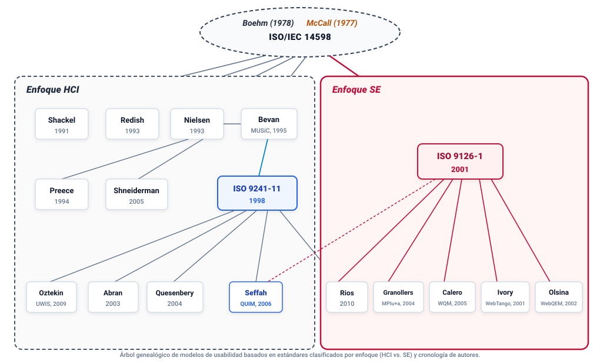

Introducción
Durante las últimas décadas, el desarrollo de sistemas interactivos pasó de centrarse exclusivamente en la capacidad de cómputo y la corrección algorítmica a priorizar el desempeño de los usuarios finales [1]. En este contexto, la usabilidad se consolidó como un factor determinante para evaluar si una aplicación permite a las personas cumplir sus tareas con efectividad y satisfacción [2].
La definición y medición de la usabilidad se desarrolló principalmente a través de dos comunidades con objetivos y métodos distintos:
1) Interacción Humano-Computador (HCI): Basada en la psicología cognitiva, la ergonomía y los estudios de interacción, analiza los modelos mentales del usuario, la carga de trabajo, las tareas concretas y el contexto de uso [3], [4].
2) Ingeniería de Software (SE): Centrada en el ciclo de vida del producto, la especificación de requerimientos y el control de calidad, trata la usabilidad como una característica del software que puede descomponerse en métricas internas y externas verificables [5], [6].
Este trabajo describe el árbol genealógico de los modelos de usabilidad estructurados a partir de estándares internacionales. Se explican los antecedentes conceptuales, los autores y normas que integran cada enfoque, sus relaciones directas y su integración en los modelos actuales de calidad.
Raíces y Fundamentos de la Calidad del Software
En el origen del árbol genealógico coinciden tres propuestas que definieron la descomposición jerárquica de la calidad en factores, criterios y métricas:

A. Modelo de McCall, Richards y Walters (1977)
El modelo desarrollado por McCall et al. [7] para la Fuerza Aérea de los Estados Unidos organizó la calidad del software en tres niveles: factores (perspectiva de quien usa o adquiere el sistema), criterios (visión técnica del equipo de desarrollo) y métricas cuantitativas.
La calidad se dividió en tres perspectivas operativas: Operación del producto, Revisión del producto y Transición del producto. Dentro de la operación del producto, McCall definió la usabilidad como el esfuerzo necesario para aprender a operar el sistema, preparar los datos de entrada e interpretar los resultados [7]. Su principal limitación fue evaluar este factor a partir de estimaciones de los propios programadores, sin involucrar pruebas con usuarios reales.
B. Modelo Jerárquico de Barry Boehm (1978)
Barry Boehm [8] planteó un modelo jerárquico dividido en características de alto nivel, nivel intermedio y características primitivas. En la utilidad directa (as-is utility) se ubicó la usabilidad, asociada con la confiabilidad y la claridad de operación. Boehm señaló que un programa sin defectos técnicos pierde utilidad práctica si los operadores cometen errores reiterados al utilizarlo.
C. Estándar ISO/IEC 14598 (1999-2001)
A partir de los modelos de McCall y Boehm, la Organización Internacional de Normalización elaboró la norma ISO/IEC 14598 [9] en seis partes: visión general, planificación y gestión, proceso para desarrolladores, proceso para compradores, proceso para evaluadores y módulos de evaluación. El papel de esta norma en la genealogía fue fijar el procedimiento para medir y evaluar las características de calidad que la norma complementaria ISO/IEC 9126 se encargó de definir conceptualmente.
Enfoque HCI (Human-Computer Interaction)
La rama de HCI sostiene que la usabilidad se manifiesta durante la interacción entre la persona, el sistema y la tarea dentro de un entorno concreto, en lugar de residir como una propiedad estática del código.
A. Shackel (1991): Definición Operativa Cuantitativa
Brian Shackel [10] formuló una de las primeras definiciones verificables de usabilidad en ergonomía de software, estableciendo cuatro criterios mensurables:
1) Efectividad: Rendimiento en la tarea, expresado como porcentaje de éxito o margen de error frente a una meta prefijada.
2) Aprendibilidad: Tiempo y práctica requeridos para alcanzar un nivel de dominio operativo determinado.
3) Flexibilidad: Capacidad del sistema para responder a variaciones en las tareas o en las condiciones de uso.
4) Actitud: Satisfacción del usuario y ausencia de fatiga física o mental durante la sesión.
B. Redish (1993): Documentación y Tareas Reales
Janice Redish [11] vinculó la usabilidad con el diseño de información y la comunicación técnica. Mostró que los manuales, mensajes de error, etiquetas y microcopias forman parte de la interfaz. Su trabajo promovió pruebas iterativas con usuarios enfocadas en verificar si el lenguaje del sistema coincide con los conceptos que maneja el usuario.
C. Nielsen (1993): Modelo de Aceptabilidad del Sistema
Jakob Nielsen [2] estructuró la usabilidad dentro de la aceptabilidad práctica del sistema, distinguiendo entre utilidad (si el sistema tiene las funciones necesarias) y usabilidad (la facilidad con que los usuarios acceden a esas funciones).
Nielsen dividió la usabilidad en cinco atributos: Aprendibilidad (learnability), Eficiencia (efficiency), Memorabilidad (memorability), Tasa de errores (errors) y Satisfacción (satisfaction). Nielsen popularizó el método de evaluación heurística y observó que grupos de cinco usuarios en pruebas formativas identifican la mayoría de los problemas de usabilidad cualitativos.
D. Bevan y el Proyecto MUSiC (1995)
Nigel Bevan dirigió el proyecto europeo MUSiC (Measuring Usability of Systems in Context) [12] para crear métricas aplicables en situaciones reales de trabajo. El modelo midió rendimiento en la tarea, carga mental (mediante instrumentos como SMEQ y NASA-TLX) y satisfacción mediante cuestionarios estandarizados, sirviendo de base directa para redactar la norma ISO 9241-11.
E. Preece et al. (1994): Objetivos de Usabilidad y Experiencia de Usuario
Jenny Preece et al. [13] diferenciaron formalmente dos tipos de metas de diseño: objetivos de usabilidad (funcionales y cuantificables: efectividad, eficiencia, seguridad operacional y aprendibilidad) y objetivos de experiencia de usuario (subjetivos y afectivos: atractivo estético, entretenimiento y motivación).
F. Shneiderman (2005): Reglas de Diseño y Usabilidad Universal
Ben Shneiderman [14] formuló las ocho reglas de oro del diseño de interfaces: mantener la consistencia, ofrecer atajos a usuarios frecuentes, brindar retroalimentación clara, diseñar diálogos que marquen cierre, prevenir errores, permitir deshacer acciones con facilidad, apoyar el control interno del usuario y reducir la carga sobre la memoria de corto plazo. Planteó además el concepto de usabilidad universal para atender la diversidad de capacidades humanas, equipos y conexiones.
G. Estándar ISO 9241-11 (1998): Marco Central de HCI
La norma ISO 9241-11 [15] formalizó la definición estándar internacional: grado en que usuarios específicos pueden utilizar un producto para lograr metas específicas con efectividad, eficiencia y satisfacción en un contexto de uso determinado.
Donde la Efectividad mide la precisión y completitud con que se alcanzan los objetivos; la Eficiencia representa los recursos consumidos (tiempo, esfuerzo mental o costo) en relación con los resultados obtenidos; y la Satisfacción expresa el grado de confort y actitud positiva hacia el uso del sistema.
H. Abran et al. (2003): Modelo Consolidado
Alain Abran et al. [16] diseñaron un modelo unificado para articular las definiciones de la ISO 9241-11 y la ISO/IEC 9126, integrando efectividad, eficiencia y satisfacción con aprendibilidad y seguridad en la operación.
I. Quesenbery (2004): Las 5 Es
Whitney Quesenbery [17] sintetizó la usabilidad en cinco dimensiones de comunicación clara: Eficaz (effective), Eficiente (efficient), Atractivo (engaging), Tolerante a errores (error tolerant) y Fácil de aprender (easy to learn). Quesenbery mostró que la importancia relativa de cada dimensión cambia según el tipo de producto.
J. Seffah et al. (QUIM, 2006): Integración entre HCI e Ingeniería de Software
Ahmed Seffah et al. [18] desarrollaron el modelo QUIM (Quality in Use Integrated Measurement), estructurado en 10 factores de usabilidad, 26 subfactores y 127 métricas cuantitativas concretas, permitiendo a los equipos técnicos conectar decisiones de código y arquitectura con los resultados de usabilidad observados en los usuarios.
K. Oztekin et al. (UWIS, 2009): Sistemas Web de Información
Asim Oztekin et al. [19] crearon el marco UWIS empleando modelos de ecuaciones estructurales (SEM) para analizar sistemas web institucionales y portales complejos, demostrando la interdependencia entre calidad de contenidos, arquitectura de navegación, velocidad técnica y credibilidad visual.
Enfoque SE (Software Engineering)
La vertiente de Ingeniería de Software trata la usabilidad como una característica verificable del producto, vinculada a modelos de calidad, inspección de código y metodologías del ciclo de desarrollo.
A. Estándar ISO/IEC 9126-1 (2001)
La norma ISO/IEC 9126-1 [20] definió la calidad del producto de software a través de dos esquemas complementarios:
1) Calidad interna y externa: Dividida en funcionalidad, confiabilidad, usabilidad, eficiencia, mantenibilidad y portabilidad. La usabilidad comprende cinco subcaracterísticas: entendibilidad, aprendibilidad, operabilidad, atractivo y conformidad con estándares de usabilidad.
2) Calidad en uso: Resultado del producto al ejecutarse en un entorno de trabajo real, evaluada mediante efectividad, productividad, seguridad y satisfacción. Este modelo adoptó los conceptos ergonómicos de la norma ISO 9241-11.
B. Rios et al. (2010): Requisitos Formales de Usabilidad
Alba Ríos et al. [21] formularon un metamodelo para incorporar las normas ISO 9241-11 e ISO/IEC 9126 en la etapa de ingeniería de requisitos. El modelo traduce objetivos generales de usabilidad en criterios medibles asociados a casos de uso e historias de usuario.
C. Granollers (MPIu+a, 2004): Proceso Unificado
Toni Granollers [22] presentó el modelo de proceso MPIu+a para coordinar el trabajo entre desarrolladores e ingenieros de usabilidad. El marco articula el ciclo de desarrollo tradicional con actividades iterativas de evaluación formativa y diseño centrado en el usuario, integrando los requisitos de accesibilidad web (WCAG) desde las etapas tempranas de análisis arquitectónico.
D. Calero et al. (WQM, 2005): Modelo de Calidad Web
Coral Calero et al. [23] formularon el Web Quality Model (WQM) estructurado en tres dimensiones: características de calidad del producto (basadas en ISO/IEC 9126), particularidades del entorno web (contenido, navegación, presentación) y fases del ciclo de vida.
E. Ivory & Hearst (WebTango, 2001): Evaluación Automatizada
Melody Ivory y Marti Hearst [24] desarrollaron WebTango en la Universidad de California en Berkeley, prediciendo niveles de usabilidad mediante métricas cuantitativas extraídas del código HTML y hojas de estilo: densidad textual, distribución de imágenes, relación texto/enlaces y equilibrio visual de la plantilla.
F. Olsina et al. (WebQEM, 2002): Metodología de Evaluación Cuantitativa
Luis Olsina et al. [25] estructuraron la metodología WebQEM (Web Quality Evaluation Methodology), que organiza características y subcaracterísticas alineadas con ISO/IEC 9126. Mediante funciones de agregación lógica (LSP), el método consolida múltiples métricas individuales de páginas y menús en un índice porcentual comparable entre diferentes aplicaciones web.
| Modelo / Autor | Año | Enfoque | Dimensiones Clave | Aporte Principal | Limitación Principal |
|---|---|---|---|---|---|
| McCall et al. [7] | 1977 | SE Raíz | Facilidad de uso, corrección, confiabilidad, eficiencia. | Primera estructura jerárquica: factores, criterios y métricas. | Medición dependiente del criterio de los programadores. |
| Barry Boehm [8] | 1978 | SE Raíz | Utilidad directa, claridad de interfaz, robustez. | Destaca que el software sin facilidad operativa pierde valor práctico. | Métricas empíricas de usabilidad poco desarrolladas. |
| ISO/IEC 14598 [9] | 1999 | SE Raíz | Procesos para desarrolladores, adquirentes y evaluadores. | Procedimiento formal para conducir evaluaciones de software. | No define atributos de interfaz por sí misma, solo el proceso. |
| Brian Shackel [10] | 1991 | HCI | Efectividad, aprendibilidad, flexibilidad y actitud. | Introduce criterios de aceptación cuantitativos y verificables. | Poca atención a factores estéticos o emocionales. |
| Janice Redish [11] | 1993 | HCI | Orientación a tareas, claridad textual, microcopias. | Integra textos, etiquetas y mensajes como parte activa de la interfaz. | Enfoque concentrado en aspectos lingüísticos y documentales. |
| Jakob Nielsen [2] | 1993 | HCI | Aprendibilidad, eficiencia, memorabilidad, errores, satisfacción. | Métodos de bajo costo: evaluación heurística y pruebas formativas. | Enfoque cualitativo; no precisa propiedades de arquitectura interna. |
| Bevan (MUSiC) [12] | 1995 | HCI | Rendimiento en la tarea, esfuerzo mental (SMEQ), satisfacción. | Demuestra que la usabilidad debe evaluarse en contexto real. | Pruebas de laboratorio complejas de aplicar con recursos reducidos. |
| Preece et al. [13] | 1994 | HCI | Metas de usabilidad vs. metas de experiencia de usuario. | Distingue aspectos productivos de dimensiones afectivas y hedónicas. | Dificultad para formular métricas exactas en variables emocionales. |
| Ben Shneiderman [14] | 2005 | HCI | Ocho reglas de oro, usabilidad universal, velocidad de aprendizaje. | Guías directas de diseño para interfaces gráficas de usuario. | Reglas prescriptivas que requieren criterio experto para su adaptación. |
| ISO 9241-11 [15] | 1998 | HCI Estándar | Efectividad, eficiencia y satisfacción en contexto de uso. | Definición formal aceptada en la industria y la investigación internacional. | No describe los atributos del código que posibilitan esa usabilidad. |
| Abran et al. [16] | 2003 | HCI / SE | Efectividad, eficiencia, satisfacción, aprendibilidad y seguridad. | Integra formalmente los marcos de ISO 9241 e ISO 9126. | Menor difusión industrial que los estándares ISO individuales. |
| Quesenbery [17] | 2004 | HCI | Las 5 Es: eficaz, eficiente, atractivo, tolerante y aprendible. | Modelo pedagógico que permite balancear atributos según el dominio. | Marco conceptual sin formalización matemática de métricas. |
| Seffah (QUIM) [18] | 2006 | HCI/SE Puente | 10 factores, 26 subfactores y 127 métricas formales. | Taxonomía que vincula métricas de código con resultados en usuarios. | Complejidad técnica elevada para proyectos de desarrollo pequeños. |
| Oztekin (UWIS) [19] | 2009 | HCI / Web | Contenido, navegación, rendimiento técnico y estética. | Empleo de ecuaciones estructurales para validar usabilidad web. | Orientado a portales y sistemas de información institucionales. |
| ISO/IEC 9126-1 [20] | 2001 | SE Estándar | Entendibilidad, aprendizaje, operabilidad, atractivo y calidad en uso. | Incorpora la usabilidad como pilar de la calidad del producto software. | Frontera ambigua entre calidad externa y calidad en uso. |
| Rios et al. [21] | 2010 | SE / HCI | Requisitos de usabilidad mapeados en historias y casos de uso. | Formaliza la usabilidad en la fase de ingeniería de requerimientos. | Requiere analistas con formación combinada en ingeniería y UX. |
| Granollers (MPIu+a) [22] | 2004 | SE / HCI | Ciclo de vida integrado con actividades de UX y accesibilidad. | Incorpora accesibilidad (WCAG) y usabilidad desde el análisis inicial. | Exige cambios en la organización de los equipos de desarrollo. |
| Calero (WQM) [23] | 2005 | SE / Web | Calidad de producto web (ISO 9126), navegación, presentación. | Matriz tridimensional adaptada a hipertextos y portales web. | Requiere calibrar umbrales métricos según el tipo de sitio. |
| Ivory (WebTango) [24] | 2001 | SE / Métricas | Métricas cuantitativas de código HTML/CSS, enlaces y texto. | Predicción automatizada de usabilidad web sin evaluadores manuales. | No identifica fallas de modelo mental ni frustración del usuario. |
| Olsina (WebQEM) [25] | 2002 | SE / Web | Árbol jerárquico de características, agregación lógica (LSP). | Método repetible para auditorías y comparación cuantitativa web. | Demanda recolección intensiva de datos para calcular el índice global. |
Convergencia en la Norma ISO/IEC 25010
Durante las décadas de 1990 y 2000, los enfoques HCI y SE mantuvieron diferencias operativas: mientras HCI priorizaba la observación directa de los usuarios y consideraba insuficientes las listas de verificación técnicas, SE buscaba métricas objetivas integradas en el código fuente.
Esta divergencia se resolvió con la serie de normas ISO/IEC 25000 (SQuaRE), que sustituyó a las normas ISO/IEC 9126 e ISO/IEC 14598.
La norma ISO/IEC 25010 [26] recogió las propuestas integradoras de modelos como QUIM (Seffah) y MPIu+a (Granollers), organizando la evaluación en dos modelos interrelacionados:
1) Modelo de calidad del producto: La usabilidad se define como una característica interna del sistema compuesta por seis subcaracterísticas: reconocibilidad de adecuación, aprendibilidad, operabilidad, protección contra errores del usuario, estética de la interfaz y accesibilidad. La inclusión explícita de la accesibilidad confirma que un producto no puede considerarse usable si excluye a personas con discapacidad.
2) Modelo de calidad en uso: Retoma el principio de la norma ISO 9241-11, evaluando el impacto del sistema mediante cinco dimensiones: Efectividad, Eficiencia, Satisfacción, Libertad de riesgo y Cobertura de contexto.
De esta forma, las especificaciones técnicas del software proporcionan la base operativa necesaria, mientras que la evaluación en contexto valida si el usuario alcanza sus metas con efectividad.
Conclusiones
1) Complementariedad disciplinar: Los enfoques HCI y SE representan facetas complementarias del desarrollo interactivo. La ingeniería de software aporta estructura en los requisitos y el ciclo de vida, mientras que la interacción humano-computador proporciona los métodos para verificar la experiencia y el desempeño humano.
2) Normalización técnica: Los estándares internacionales transformaron nociones generales sobre facilidad de uso en criterios medibles de efectividad, eficiencia y satisfacción.
3) Modelos integradores: Trabajos como QUIM (Seffah et al.) y MPIu+a (Granollers) demostraron que la usabilidad y la accesibilidad deben incorporarse desde el diseño de la arquitectura y mantenerse durante todo el ciclo de vida.
4) Relevancia profesional: En el marco de las normas actuales (ISO/IEC 25010 e ISO 9241-210), la usabilidad constituye un criterio técnico indispensable para garantizar la adopción, accesibilidad y sostenibilidad operativa de los sistemas interactivos.